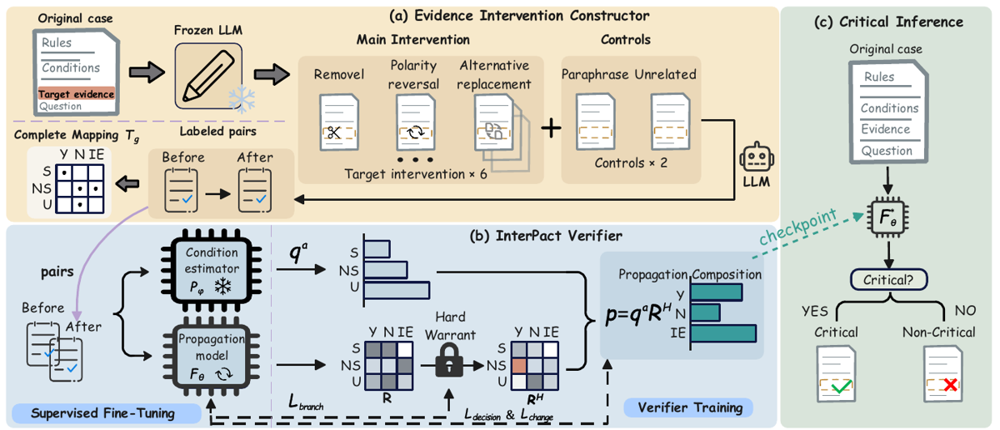
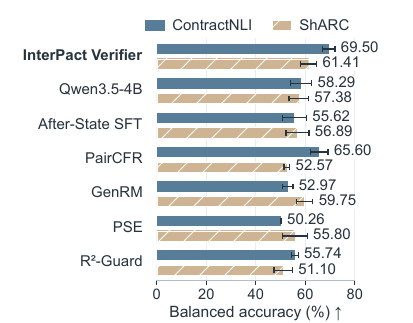
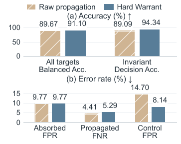

TL;DR — les auteurs fabriquent de la vérité terrain sur « cette pièce de preuve est-elle décisive ? » par interventions contrôlées (6 éditions ciblées + 2 contrôles d'invariance, générées par un LLM gelé) sur des cas où la fonction d'agrégation booléenne est connue, puis distillent cette supervision par pairs dans un modèle 4B qui, à l'inférence, répond Yes/No sur le cas original sans intervention ni annotateur.
Claim principal précis : sur 207 roots de test (85 critiques / 122 non critiques) issus d'adaptations structurées de ContractNLI et ShARC, le prompt single-case « changer seulement cette preuve pourrait-il changer la décision ? » obtient 68,28 % Acc / 66,61 % BA / 66,78 % Macro-F1 (moy. ± s.d. sur 3 runs), soit +4,51 pp d'Acc sur GenRM et +5,76 pp de BA sur PairCFR, tous les 6 baselines étant battus sur les trois métriques [Tab. 1, §5.2].
⚠️ Recadrage immédiat, central pour le dossier : la classe majoritaire vaut 122/207 = 58,94 % (calcul perso à partir de [§5.1]). Le gain réel de la méthode sur « ne jamais dire critique » est donc de +9,34 pp d'Acc, et le modèle non entraîné (Qwen3.5-4B, 60,07 %) est à +1,13 pp de cette classe majoritaire. Autrement dit, ce papier confirme plutôt qu'il ne contredit l'idée que la criticité est quasi indécodable du texte seul : il la rend faiblement décodable. Aucun plafond humain n'est mesuré sur cette tâche → non précisé (voir §7).
⚠️ Le vérifieur n'est jamais utilisé comme reward : ni RL, ni rollouts, ni reward model en boucle. C'est un classifieur binaire + un outil de diagnostic. Les auteurs proposent explicitement un usage de priorisation (« allows more capable models to concentrate their checks ») [abstract, §1], pas d'optimisation.
Origine des tâches — deux jeux publics réadaptés par les auteurs, pas repris tels quels [App. B.1] : - ContractNLI : chaque hypothèse d'un même contrat devient une condition ; Entailment / Contradiction / NotMentioned → Satisfied / Not satisfied / Unknown ; les evidence units viennent des spans annotés. La décision du cas est obtenue par conjonction des états — « this decision is not an original ContractNLI label » [App. B.1]. - ShARC : les exigences du rule snippet deviennent des conditions, associées à l'évidence du scénario ou du dialogue, combinées par conjonction ou disjonction. Le constructeur hérite de cette représentation sans la reconstruire après édition [App. B.1].
Pipeline de construction [§4.1, App. B.3] : 1. Un root = (cas original, evidence unit cible, condition cible). Le constructeur dispose des états de conditions annotés C(x_g) et de la décision D(x_g) offline. 2. 6 opérations cibles : removal (suppression directe), polarity reversal, alternative replacement, irrelevant replacement, weakening, strengthening. 2 contrôles d'invariance : paraphrase, distractor insertion. Toutes sauf removal sont des réécritures par GPT-5.4 gelé [§4.1.1]. 3. Invariants imposés : règle, decision query, descriptions des conditions, fonction d'agrégation et évidence non cible inchangées. Abstention si aucune intervention convenable [§4.1.1]. 4. Exclusion des interventions qui ne suivent pas l'opération ou qui changent un état de condition non cible [§4.1.2]. 5. L'état de la condition cible après édition est jugé avec assistance modèle, à partir de l'évidence complète, sans voir le label attendu ni le nom de l'opération ; désaccords → revue supplémentaire [§4.1.2, App. B.3]. 6. La décision après édition n'est jamais prédite par un modèle : elle est calculée par la fonction d'agrégation A sur le vecteur d'états [§4.1.2]. ✅ Choix de conception le plus important du papier : il élimine le bruit du juge sur la sortie finale. 7. Complete mapping T_g(c) = A_g(C(x_g)_{t←c}) pour les 3 états possibles, sans éditer l'évidence [éq. 4] → supervision pour des états jamais observés.
Volume — 6 913 pairs acceptées sur 1 041 roots ; 3 680 ContractNLI + 3 233 ShARC [App. B]. Splits component-disjoint (document source, famille de règles, quasi-doublons détectés) : train 4 168 pairs / 628 roots / 116 composantes ; dev 1 386 / 206 / 66 ; test 1 359 / 207 / 52 [Tab. 5]. 4 997 pairs cibles + 1 916 contrôles. Comptes par opération en [Tab. 6] (test : removal 203, polarity 127, alternative 157, irrelevant 177, weakening 154, strengthening 160). Tous les totaux se recomposent exactement (vérifié).
Distribution de difficulté — pas de notion de difficulté par item ; à la place un régime de changement : sur les 978 pairs cibles de test, 495 invariant (état inchangé), 256 absorbed (état changé, décision inchangée), 227 propagated (les deux changent) [App. B.3]. Donnée la plus utile du papier : 53,0 % des interventions qui changent l'état de la condition laissent la décision inchangée — les auteurs précisent eux-mêmes que ce chiffre décrit le corpus construit et « does not estimate how often evidence is decision-critical in naturally occurring cases » [App. B.3]. ✅ Honnêteté notable.
Filtrage — aucun filtrage par pass@k du modèle de base. Le filtrage est sémantique (fidélité d'opération, préservation du contexte non cible), pas par difficulté. Les pairs douteuses ne sont pas jetées mais pondérées : tag extended si au moins un check de fidélité / cohérence / naturalité est flaggé ou indisponible → poids ω_i = 0,5 sur les pertes decision et change ; ω_i = 1 sinon [App. D.1].
Curriculum — aucun. Deux passes sur les pairs d'entraînement, pas de rééchantillonnage ni d'ordre [Tab. 9].
Contamination — ✅ séparation train/test par composantes connexes (349 groupes initiaux → 210/69/70) [App. B.3]. ❌ Aucune discussion du fait que Qwen3.5-4B ait pu voir ContractNLI et ShARC en pré-entraînement → non précisé. Atténuation partielle : les labels de décision et de criticité ne sont pas ceux des sources.
Données SFT/IFT avant RL — pas de RL ; mais un cold start obligatoire : stage 1 = After-State SFT (prédire état cible + décision depuis le cas après intervention), dont le checkpoint sert à la fois d'estimateur gelé P_φ et d'initialisation de F_θ, partagés par toutes les ablations d'un même run [App. D.1, Alg. 1].
Coût humain — deux revues distinctes, chiffrées : - Construction review (assistée modèle) : 400 pairs — une par groupe initial (349) + pairs d'opérations sous-couvertes ou error-prone. Erreurs corrigées, associations d'évidence invalides exclues (et avec elles les autres interventions du même root). Les auteurs écrivent que cet échantillon « supports error discovery, not an unbiased estimate of label accuracy » [App. B.3]. - Human semantic audit : 400 pairs tirées uniformément sans remise des 6 913, 3 reviewers indépendants puis discussion des désaccords, avec protocole d'aveuglement explicite (référence après intervention, mapping, jugements modèle et réponses des autres reviewers cachés ; opération révélée seulement après le premier jugement d'état) [App. B.5]. - Nombre d'heures, profil des reviewers (juristes ? étudiants ?), rémunération : non précisé. ⚠️ Pour un transfert juridique, c'est l'information la plus manquante.
⚠️ Pas d'environnement au sens RL : aucun sandbox, aucun outil, aucun multi-turn, aucun reset. Deux régimes d'inférence statiques.
Observation — inférence directe (le régime qui porte le claim) : prompt single-case, identique pour tous les modèles, recopié de [App. D.4] :
Original case:
<original case>Decision rule:<decision rule>All conditions:<condition descriptions>Target condition:<target condition>Target evidence location:<target evidence location>Aggregation rule:<aggregation rule>Would changing only the target evidence, while keeping all other case facts and decision rules fixed, be capable of changing the final decision? Answer exactly Yes or No.
Aucun état de condition, aucune décision, aucun cas édité, aucun mapping de référence dans ce prompt [§4.2.4, App. D.4]. ✅ Point fort : la question d'évaluation est recopiée exactement, et les champs d'entrée sont donnés sous forme de placeholders [App. D.4] — rare, mais le contenu réel sérialisé dans <original case> n'est jamais montré.
Observation — évaluation par pairs : règle, decision query, conditions, fonction d'agrégation, evidence unit et condition cibles, cas avant et après intervention. La décision originale d^b est fournie et supposée correcte ; l'état cible avant intervention c^b est fourni au Verifier InterPact, à ses ablations et au baseline prompté. Sont exclus des entrées : noms d'opérations, labels de référence après intervention, états des conditions non cibles, complete mappings [App. C].
Espace d'actions — une sortie : Yes / No (criticité, pas la décision du cas) en inférence directe ; en mode pairs, un état de condition + une distribution de décision sur 3 classes.
Single-turn, horizon 1. Input truncation: None [Tab. 9] — pas de gestion de contexte long ; sur des contrats entiers c'est un point dur esquivé.
Exécution — aucune. La seule « exécution » est le calcul symbolique de A (conjonction/disjonction 3-valuée), donc déterministe par construction. Trois runs ; pas de température ni de seed rapportées → non précisé.
Sorties mal formées — traitées explicitement et honnêtement : les réponses non parsables comme Yes/No comptent comme erreur d'accuracy et instance manquée pour recall et F1, et ne sont pas mappées sur No ; elles restent au dénominateur [App. D.3]. Taux d'invalides : 0,00 pour InterPact, Qwen, After-State SFT, PairCFR, GenRM ; 1,61 ± 1,39 pour PSE ; 0,97 ± 0,84 pour R²-Guard [Tab. 1]. Les auteurs décrivent les modes : PSE « reports contradictions or says it cannot judge », R²-Guard « analyzes the evidence without providing the requested Yes/No answer » [App. D.3].
Exemple de trajectoire — aucun exemple complet de cas ou d'intervention n'est recopié dans le papier (ni dans les annexes). ⚠️ Pour un papier dont tout repose sur la qualité des éditions générées, l'absence du moindre exemple qualitatif est une lacune réelle.
Deux niveaux à ne pas confondre.
Type : hybride, et c'est le cœur de l'intérêt du papier. - Décision : symbolique, calculée par la fonction d'agrégation A, jamais prédite [§4.1.2, App. B.2]. Conjonction 3-valuée : tout Not satisfied → No ; tous Satisfied → Yes ; sinon Insufficient. Disjonction : tout Satisfied → Yes ; tous Not satisfied → No ; sinon Insufficient [App. B.2]. - État de condition : LLM-as-judge (modèle non nommé pour cette étape ; GPT-5.4 est cité pour la génération des éditions [§4.1.1] — le modèle juge n'est pas explicitement identifié → non précisé), aveugle au label attendu et au nom de l'opération, jugé deux fois (directement et par comparaison avant/après), désaccords escaladés [App. B.3]. - Label de criticité d'un root [éq. 10] : y_g = 1 ssi ∃ une intervention autorisée qui change la décision.
Asymétrie des labels — le point à retenir. Un positif est certifié par un changement de décision observé. Un négatif est plus mou, et les auteurs le disent : « Missing interventions alone do not justify a negative label » [§5.1]. Sur les 122 roots négatifs de test [App. B.4] : - 88 sont prouvés : T_g(c) = d^b_g pour les 3 états → sous règle et contexte non cible fixés, aucun changement de la condition cible ne peut changer la décision. ✅ Négatif déductif, pas empirique. - 34 reposent sur un jugement de reviewers examinant règle, évidence cible et non cible, et 140 interventions disponibles. Les auteurs : « These judgments reflect an assessment of the case evidence rather than an exhaustive enumeration of possible edits » [App. B.4]. - Couverture d'opérations sur les négatifs : 36 roots couvrent les 6 opérations, 86 ont une couverture incomplète ; et « even coverage of all six types does not exhaust the allowed text changes » [App. B.4]. ⚠️ Donc le label négatif est, par construction, un label « on n'a pas trouvé d'édition qui renverse », soit un risque de faux négatifs structurel : y_g est un minorant de la criticité réelle.
Fiabilité mesurée — oui, partiellement, avec intervalles [Tab. 7, App. B.5], sur 400 pairs, avant correction :
| Aspect | n/N | Pass/accord | Wilson 95 % |
|---|---|---|---|
| Case structure and evidence association | 400/400 | 100,00 % | [99,05 ; 100,00] |
| Intervention fidelity | 389/400 | 97,25 % | [95,14 ; 98,46] |
| Target condition state | 363/400 | 90,75 % | [87,51 ; 93,21] |
| Decision after intervention | 385/400 | 96,25 % | [93,91 ; 97,71] |
Les auteurs précisent que ce ne sont « neither inter-reviewer agreement nor residual error rates in the experimental data », que l'audit est conditionnel aux labels originaux fournis et ne garantit pas chaque label du corpus [App. B.5]. ⚠️ Deux conséquences : (i) le maillon faible est le jugement d'état de condition à ~90,75 %, qui se propage mécaniquement dans la décision calculée ; (ii) aucun audit, aucun IAA, aucun intervalle n'est rapporté sur les 207 labels de criticité de test, c'est-à-dire précisément sur la cible du chiffre d'abstract. C'est la case eval que je refuse (§7).
Robustesse / anti-hacking — ✅ les 2 contrôles d'invariance (paraphrase, distractor insertion, 1 916 pairs) sont exactement un test d'attaque du vérifieur : une paraphrase ne doit jamais changer la décision. Résultat en §5.
Aucun RL. Deux stages supervisés [App. D.1, Alg. 1] : 1. After-State SFT : next-token CE sur (état cible, décision) depuis le cas après intervention. Sélection du checkpoint par AP de changement de décision sur dev. Ce checkpoint est gelé en P_φ et initialise F_θ. 2. Verifier training : seul θ est mis à jour, φ reste gelé. Les 3 requêtes conditionnelles (une par état cible) partagent les mêmes cas et un seul forward pass ; leurs logits de label forment R_i. Les positions de réponse contiennent des placeholders fixes, les réponses de référence ne servent que de cibles de perte. Gradients : L_branch met à jour F_θ directement ; L_decision et L_change traversent Hard Warrant et la composition, qui n'ont aucun paramètre [§4.2.3].
Hyperparamètres [Tab. 9] : Qwen3.5-4B + LoRA r=32 / α=64 / dropout 0,05 ; modules entraînables = adaptateurs des couches linéaires + embeddings + couche de sortie ; LR 5×10⁻⁵, cosine decay, 3 % warmup ; Adam, weight decay 0,1 ; batch global 16 / micro 2 ; 2 passes sur les pairs ; 11 checkpoints (tous les 50 updates + le dernier) ; pas de troncature d'entrée ; sélection du checkpoint par NLL de décision sur dev [éq. 12] (ties → step antérieur). Non rapportés : KL (sans objet), température de sampling, longueur max de génération, nombre total de steps en absolu, seeds → non précisé.
Stabilité — aucune instabilité rapportée, aucune astuce abandonnée mentionnée. ⚠️ Le point fragile n'est pas la stabilité mais la sélection : le checkpoint qui porte le chiffre d'abstract (inférence directe) est choisi par une métrique d'un autre régime (NLL de décision par pairs), jamais sur des labels de criticité de roots [§5.1, App. D.2]. Les auteurs le présentent comme une garantie d'honnêteté (« without training on root criticality labels ») — ✅ c'est vrai, mais cela signifie aussi que la variance de 2,01 pp sur l'Acc directe n'est pas contrôlée par la sélection, et que l'ordre méthode/ablations sur le test direct est en partie un sous-produit.
Compute — GPU/TPU-heures, type de matériel, durée : non précisé. Aucune section infra.
Dynamique — pas de courbes de reward, de longueur, ni d'entropie. Le seul diagnostic de dynamique est [Fig. 5] sur les distributions de probabilités prédites (§5).
Le papier en expose plusieurs, chiffrés, sans les appeler ainsi.
1. Faux changements de décision sur les contrôles d'invariance — le failure mode le plus important pour un usage de type reward. → Comportement : sur les 381 contrôles de test (paraphrase, distractor insertion), InterPact prédit un changement de décision avec FPR = 6,39 ± 1,60 %, contre 0,09 ± 0,15 % pour GenRM, soit +6,30 pp [Tab. 12, Tab. 14, §5.5]. Une reformulation sans changement de sens est jugée décisive dans ~1 cas sur 16. → Détecté par : les contrôles d'invariance eux-mêmes, intégrés au design dès la construction. → Corrigé : non. Les auteurs l'énoncent comme une limite ouverte : « false changes on controls remain a limitation » [§5.5]. ⚠️ Et les ablations sont meilleures que la méthode complète sur ce critère (w/o branch loss 5,60 ; w/o composition 6,82 ; InterPact 6,39 ; after-state SFT 15,22) [Tab. 14] — donc le gain principal s'accompagne d'une sensibilité au bruit de surface que l'agrégat masque.
2. Hard Warrant échange des faux positifs contre des changements manqués — trade-off prouvé puis mesuré. → Prouvé : 0 ≤ s^raw − s^H = q^ac^b ≤ q^a[c^b] [éq. 12, App. A] ⇒ « at a fixed threshold, Hard Warrant cannot increase false predictions of a decision change, but it may increase missed changes ». → Mesuré à checkpoint et seuil fixés [Fig. 6, App. E.3] : BA de changement 89,67 → 91,10 ; accuracy de décision sur invariant 89,09 → 94,34 ; Control FPR 14,70 → 8,14 ; mais FNR sur propagated 4,41 → 5,29 ; absorbed FPR inchangé 9,77 → 9,77. → Correction : aucune — assumé comme arbitrage. En juridique, rater un changement requis (faux négatif sur une pièce décisive) est la faute coûteuse ; ⚠️ cet arbitrage va dans le mauvais sens pour notre usage.
3. Effondrement par source : ShARC résiste. Sur 90 roots ShARC, toutes les ablations tombent au niveau du hasard en BA : w/o composition 50,20, w/o branch loss 47,79, w/o Hard Warrant 50,77, w/o change loss 47,58, contre 61,41 pour la méthode complète [Tab. 10]. Inversement sur ContractNLI, w/o branch loss bat la méthode complète (Acc 75,78 vs 73,50 ; BA 70,50 vs 69,50 ; Macro-F1 71,49 vs 70,01) [Tab. 10]. Les auteurs signalent la divergence (« Branch loss appears useful on ShARC ») [§5.3] mais le claim « InterPact has higher mean BA and Macro-F1 than every ablation » [§5.3] n'est donc vrai qu'en agrégat, pas par source.
4. Le signal se concentre sur une source. Le gain en accuracy de décision par pairs sur GenRM est de +5,60 pp sur ContractNLI mais +0,14 pp sur ShARC, où GenRM est même devant de 0,10 pp en BA de changement [Tab. 12, App. F.3]. Les auteurs l'écrivent explicitement : « Higher overall accuracy therefore does not imply fewer errors in every setting » [App. F.3].
5. Un bon classifieur d'états n'est pas un bon détecteur de criticité. Retirer la composition ne coûte que 1,02 pp sur All Three Decisions Correct mais 9,76 pp de BA directe [Fig. 3, Tab. 2, §5.4] ⇒ « accurate conditional decision predictions alone do not explain the gain in direct judgments ». ✅ Réfutation interne propre d'un raccourci naturel (améliorer les jugements locaux ≠ améliorer la détection de criticité).
6. Trou de couverture assumé : aucun root retenu n'a Unknown comme état de condition cible original ; Unknown n'apparaît qu'après intervention et dans les mappings [App. B.3]. « Generalization to original cases with an Unknown target condition state therefore requires further evidence. » ⚠️ En droit, « la preuve ne permet pas de trancher » est l'état de départ le plus fréquent — ce trou est exactement au mauvais endroit.
Biais hérité des décisions passées (point soulevé en commande) — ⚠️ évaluation perso : le risque est structurellement déplacé, pas absent. Comme la décision est recalculée par A et jamais prédite, le vérifieur n'hérite pas du biais des décisions rendues ; mais il hérite intégralement (i) du biais de la représentation (quelles hypothèses deviennent des conditions, quelle agrégation leur est imposée — conjonction plaquée sur ContractNLI, dont « this decision is not an original ContractNLI label » [App. B.1]), (ii) du biais des états de conditions annotés dans les sources, pris comme corrects et jamais ré-audités (« The original labels were assumed correct » [App. B.5] ; « it does not reconstruct the conditions after editing » [App. B.1]), et (iii) du biais du générateur d'éditions GPT-5.4, qui définit à lui seul l'espace 𝒪_g des « changements autorisés » et donc ce que « décisif » veut dire. Le papier ne discute aucun de ces trois biais.
Quasiment rien. Débit, parallélisme, sync/async, goulots, coût par step ou par rollout, matériel, heures GPU : non précisé — aucune section infra, aucune mention dans [Tab. 9] ni ailleurs.
Les seuls éléments exploitables : - Astuce de coût : les 3 requêtes conditionnelles (une par état cible) partagent les mêmes cas et un seul forward pass, les logits de label formant directement R_i [App. D.1]. Facteur 3 économisé par rapport à 3 appels. - Hard Warrant et la composition sont sans paramètre et sans coût d'inférence notable [§4.2.3]. - L'inférence directe ne requiert « no intervention construction or human review » [§4.2.4] : tout le coût (GPT-5.4 + 2×400 pairs revues) est offline, payé une fois. - Pas de troncature d'entrée [Tab. 9] : sur contrats longs, le coût mémoire est donc borné par les données, pas par le harness. ⚠️ Non quantifié. - Échelle modeste (4B + LoRA, 4 168 pairs d'entraînement, 2 passes, batch 16) : budget vraisemblablement de l'ordre de quelques heures GPU, mais ⚠️ c'est une extrapolation de ma part, le papier ne le dit pas.
| Chiffre annoncé | Où il est annoncé | Source dans le papier | Verdict |
|---|---|---|---|
| 68,28 % accuracy | abstract, §1, conclusion | Tab. 1 : 68,28 ± 2,01 | confirmé |
| « outperforming all six baselines » | abstract | Tab. 1 : 60,07 / 62,64 / 51,05 / 59,74 / 63,77 / 52,98 — 6 baselines, tous battus sur Acc, BA et Macro-F1 | confirmé |
| +4,51 pp d'Acc sur GenRM | §5.2, conclusion | 68,28 − 63,77 = 4,51 [Tab. 1] | confirmé |
| +5,76 pp de BA sur PairCFR | §5.2 | 66,61 − 60,85 = 5,76 [Tab. 1] | confirmé |
| 6 913 pairs acceptées | abstract (implicite), §5.1, conclusion | Tab. 5 : 4 168+1 386+1 359 = 6 913 ; 3 680+3 233 = 6 913 | confirmé |
| 207 roots de test, 85 critiques / 122 non critiques | §5.1 | App. B.4 : 41+76 (ContractNLI, 117) + 44+46 (ShARC, 90) = 85+122 = 207 | confirmé |
| After-State SFT : +2,57 pp Acc, −1,56 pp BA vs Qwen | §5.2 | 62,64−60,07 = 2,57 ; 58,69−57,13 = 1,56 [Tab. 1] | confirmé |
| +3,90 pp BA sur PairCFR (ContractNLI), +1,66 pp sur GenRM (ShARC) | §5.2 | 69,50−65,60 = 3,90 ; 61,41−59,75 = 1,66 [Tab. 10, Fig. 7] | confirmé |
| Retrait de la composition : −9,76 pp BA | §5.3 | 66,61−56,85 = 9,76 [Tab. 2] | confirmé |
| Retrait du branch loss : −6,15 pp BA | §5.3 | 66,61−60,46 = 6,15 [Tab. 2] | confirmé |
| Retrait de Hard Warrant / change loss : −14,96 / −12,45 pp BA | §5.3 | 66,61−51,65 = 14,96 ; 66,61−54,16 = 12,45 [Tab. 2] | confirmé |
| « InterPact a une BA et un Macro-F1 moyens supérieurs à chaque ablation » | §5.3 | Vrai en agrégat [Tab. 2] ; faux sur ContractNLI : w/o branch loss 70,50 BA / 71,49 F1 vs 69,50 / 70,01 [Tab. 10] | sur-généralisé (vrai uniquement en moyenne sur les deux sources ; la divergence est signalée par les auteurs deux paragraphes plus loin) |
| branch loss : +1,00 pp BA sur ContractNLI si retiré, −13,62 pp sur ShARC | §5.3 | 70,50−69,50 = 1,00 ; 61,41−47,79 = 13,62 [Tab. 10] | confirmé |
| +27,26 pp (alternative states) et +46,97 pp (All Three Correct) vs w/o branch loss | §5.4 | Fig. 3 : 96,60−69,34 = 27,26 ; 90,50−43,53 = 46,97 (lu sur le PNG, valeurs étiquetées) | confirmé |
| composition : −1,02 pp All Three Correct mais −9,76 pp BA directe | §5.4 | 90,50−89,48 = 1,02 [Fig. 3] ; [Tab. 2] | confirmé |
| +3,18 pp BA de changement et +2,96 pp Acc de décision sur GenRM (pairs) | §5.5 | 90,83−87,65 = 3,18 ; 91,41−88,45 = 2,96 [Tab. 3] | confirmé |
| +2,31 pp BA et +5,28 pp Acc propagated vs w/o composition | §5.5 | 90,83−88,52 = 2,31 ; 81,79−76,51 = 5,28 [Tab. 4] | confirmé |
| vs w/o Hard Warrant : +4,17 absorbed, +4,16 global, −0,74 propagated | §5.5 | 93,49−89,32 = 4,17 ; 91,41−87,25 = 4,16 ; 81,79−82,53 = −0,74 [Tab. 4] | confirmé |
| +5,60 pp Acc sur ContractNLI, +0,14 sur ShARC, GenRM +0,10 en BA sur ShARC | §5.5, App. F.3 | 93,08−87,48 = 5,60 ; 89,62−89,48 = 0,14 ; 89,41−89,31 = 0,10 [Tab. 12] | confirmé |
| +6,30 pp de faux changements sur 381 contrôles vs GenRM | §5.5 | 6,39−0,09 = 6,30 [Tab. 12] | confirmé |
| Hard Warrant (checkpoint fixe) : BA 89,67→91,10, invariant 89,09→94,34, control FPR 14,70→8,14, propagated FNR 4,41→5,29 | App. E.3 | Fig. 6 : valeurs étiquetées identiques | confirmé |
| Audit humain : 100,00 / 97,25 / 90,75 / 96,25 % | App. B.5 | Tab. 7 : 400/400, 389/400, 363/400, 385/400 — ratios exacts | confirmé |
| 53,0 % des changements d'état laissent la décision inchangée | App. B.3 | 256 absorbed / (256+227) = 53,0 % sur le test [App. B.3] | confirmé (le texte dit « the constructed intervention pairs » ; le calcul ne tombe juste que sur le split test — ambiguïté mineure de périmètre) |
| 60,4 % des roots d'entraînement couvrent < 3 états ; 31,1 % reçoivent des décisions non observées (36,8 % CNLI / 23,2 % ShARC) | App. B.2 | Texte + Fig. 4 ; mesuré sur les 628 roots d'entraînement | confirmé |
Verdict 7.0 : cohérence excellente. Chaque delta de l'abstract et du corps se recalcule exactement depuis les tableaux ; les totaux de données se recomposent sans écart ; les figures portent les valeurs numériques annoncées. Un seul énoncé sur-généralisé (supériorité sur « chaque » ablation), immédiatement nuancé par les auteurs eux-mêmes. ⇒ case coherence = vraie.
Criticité directe, 207 roots, moy. ± s.d. sur 3 runs [Tab. 1] :
| Méthode | Acc. | BA | Macro-F1 | Invalides |
|---|---|---|---|---|
| Classe majoritaire (122/122+85) | 58,94 | 50,00 | ~37,1 | — |
| Qwen3.5-4B (prompt) | 60,07 ± 1,55 | 58,69 ± 2,15 | 58,64 ± 2,08 | 0,00 |
| After-State SFT | 62,64 ± 2,23 | 57,13 ± 3,70 | 54,40 ± 6,46 | 0,00 |
| Predicted State Execution | 51,05 ± 1,95 | 51,63 ± 1,76 | 51,30 ± 2,26 | 1,61 ± 1,39 |
| PairCFR | 59,74 ± 2,28 | 60,85 ± 1,58 | 59,60 ± 2,08 | 0,00 |
| GenRM | 63,77 ± 0,84 | 57,19 ± 0,92 | 53,48 ± 1,23 | 0,00 |
| R²-Guard | 52,98 ± 1,12 | 53,33 ± 0,64 | 52,95 ± 1,17 | 0,97 ± 0,84 |
| InterPact | 68,28 ± 2,01 | 66,61 ± 1,96 | 66,78 ± 2,01 | 0,00 |
(ligne classe majoritaire = mon calcul à partir de [§5.1], absente du papier ; Macro-F1 majoritaire ≈ F1(No)=74,2 / 2.)
⚠️ Le plafond de bruit demandé n'existe pas dans le papier. Aucune accuracy humaine, aucun IAA, aucun intervalle sur les 207 labels de criticité → non précisé. Les seuls proxies disponibles : - plancher trivial 58,94 % (majoritaire) / 50,00 BA ⇒ marge réelle +9,34 pp d'Acc et +16,61 pp de BA ; - qualité d'annotation la plus proche : accord humain/adjudiqué de 90,75 % [87,51 ; 93,21] sur l'état de la condition cible, et 96,25 % sur la décision après intervention [Tab. 7] — mais sur des pairs, pas sur des roots, et conditionnellement aux labels originaux ; - faux négatifs structurels sur 34/122 roots négatifs labellisés par jugement + 86/122 à couverture d'opérations incomplète [App. B.4]. ⇒ À 68,28 % mesuré contre une annotation dont le maillon faible est à ~91 %, la marge au plafond reste large : le papier ne sature rien, et l'écart ne s'explique pas par du bruit de label.
Prédiction par pairs, 978 interventions cibles [Tab. 3] : InterPact 90,83 ± 0,73 BA de changement / 91,41 ± 0,67 Acc de décision / 84,39 ± 0,26 Acc de condition, devant GenRM (87,65 / 88,45 / N/A) et R²-Guard (87,25 / 87,56 / 84,05). ⚠️ Écart d'un régime à l'autre très instructif : ~91 % quand on montre les deux versions du cas, ~68 % quand il faut imaginer l'intervention depuis le cas original. C'est la mesure la plus directe du coût de l'inférence contrefactuelle non assistée.
Erreurs par régime [Tab. 14] : InterPact invariant FPR 13,87 ± 0,51 ; absorbed FPR 11,07 ± 1,37 ; propagated FNR 5,43 ± 1,99 (meilleur du tableau) ; controls FPR 6,39 ± 1,60 (GenRM : 11,58 / 15,62 / 11,75 / 0,09). Recall de changement global 94,57 % (InterPact) vs 88,25 % (GenRM), FPR sur cibles inchangées quasi identiques 12,92 vs 12,96 [App. F.3]. Sur ContractNLI, recall de la classe Insufficient evidence : 85,78 % vs 63,11 % pour GenRM [App. F.3]. ✅ Le gain est en grande partie un gain sur la classe « preuve insuffisante », ce qui est précisément la classe intéressante en droit.
❌ Aucun transfert hors distribution mesuré. Pas de tenue sur un troisième domaine, pas de test cross-source (entraîner ContractNLI → tester ShARC), pas de test sur une autre fonction d'agrégation. Le seul axe de généralisation est le split par composantes connexes intra-source, et la ventilation par source, qui montre déjà une forte hétérogénéité (ContractNLI 73,50 Acc vs ShARC 61,48) [Tab. 10]. Limites assumées : autres règles d'agrégation, interventions sur plusieurs evidence units, cas originaux à état Unknown — tous renvoyés aux travaux futurs [§7].
Voir [Tab. 2] (direct), [Tab. 4] (pairs), [Tab. 10] (par source), [Fig. 3] (décisions conditionnelles). Protocole ✅ exemplaire : toutes les variantes partagent, par run, l'estimateur de condition gelé, l'initialisation SFT, les entrées par pairs et l'exposition d'entraînement — « their paired condition predictions are therefore identical » [App. E]. Les variantes ne diffèrent que par un coefficient de perte ou par la façon de composer, et [éq. 13] donne la forme exacte de la variante sans composition (p^flat = q^a[c^b]e_{d^b} + (1−q^a[c^b])u_i), conçue pour conserver l'effet de la ligne Hard Warrant et n'isoler que la composition.
Ingrédient qui compte vraiment, par ordre d'effet sur la BA directe : Hard Warrant (−14,96) > change loss (−12,45) > composition (−9,76) > branch loss (−6,15). ⚠️ Nuance : le branch loss est le seul ingrédient dont l'effet change de signe selon la source (+1,00 CNLI / −13,62 ShARC), et Hard Warrant, le plus déterminant, est une contrainte logique gratuite, pas une innovation d'apprentissage — à transposer en priorité.
❌ Aucun. Un seul backbone (Qwen3.5-4B), une seule taille, un seul volume de données, aucune courbe en fonction du nombre de roots ou de pairs, aucun effet de compute. Pas de baseline frontier (GPT-5.4 n'est utilisé que comme générateur d'éditions, jamais évalué sur la tâche) → ⚠️ on ignore si un modèle fort prompté ferait déjà mieux que 68,28 % sans aucun entraînement. C'est le test manquant le plus gênant.
Verdict : plausible mais fragile — à répliquer. La mécanique interne est propre et les ablations soutiennent les attributions causales revendiquées en agrégat. Mais le claim utile (« on peut apprendre à juger la criticité depuis le cas original ») repose sur 207 roots, un gain de ~9 pp sur la classe majoritaire, une vérité terrain dont les négatifs ne sont pas exhaustifs, et une absence totale de code. À 61,48 % d'Acc sur ShARC (classe majoritaire 51,11 %), le résultat est au mieux un signal faible. Ce qui est solide, en revanche, ce n'est pas la performance mais la méthode de fabrication du label : la décision calculée symboliquement plutôt que jugée, les complete mappings et les contrôles d'invariance.
baselines ✅ — 6 baselines sur le même backbone 4B + LoRA, même prompt, même init SFT, adaptations explicitées [App. C].ablation ✅ — 4 ablations matched partageant estimateur gelé et initialisation ; la variante sans composition est construite pour ne retirer que la composition [éq. 13, App. E].variance ✅ — 3 runs avec s.d. sur toutes les tables ; intervalles de Wilson sur l'audit [Tab. 7].coherence ✅ — tous les deltas recalculés tombent juste ; un seul énoncé sur-généralisé, nuancé par les auteurs (§7.0).eval ❌ — les 207 labels de criticité (le chiffre d'abstract) ne sont ni audités en double, ni accompagnés d'IAA ; 34/122 négatifs par jugement non exhaustif, 86/122 à couverture incomplète ; contamination non discutée.repro ❌ — ni code, ni données, ni prompts de construction, ni poids ; release seulement annoncée ; modèle juge de construction non nommé.evidence = 4/6, manquant [eval, repro].

Ce qu'il faut voir : le schéma complet du pipeline. (a) Un LLM gelé produit 6 interventions cibles + 2 contrôles sur l'evidence unit désignée, et la Complete Mapping T_g (matrice 3 états × 3 décisions, à gauche) est dérivée symboliquement de la règle, pas prédite. (b) Le verifier sépare l'estimateur de condition gelé P_φ (vecteur q^a) du modèle de propagation F_θ (table R), Hard Warrant verrouillant une ligne de R (cadenas, cellule orange) avant la composition p = q^a R^H. (c) À l'inférence, seul le checkpoint F_θ* reçoit le cas original et répond Critical / Non-Critical — ni intervention, ni humain, ni modèle plus fort. À retenir pour nous : tout le coût d'annotation est offline, et la seule chose qui survit à l'inférence est un classifieur binaire.
Ce qu'il faut voir : la fragilité que l'agrégat masque. InterPact est en tête sur les deux sources (69,50 ContractNLI / 61,41 ShARC), mais l'écart aux baselines se concentre sur ContractNLI, et sur ShARC presque tout le monde est entre 51 et 60 de BA, c'est-à-dire proche du hasard (R²-Guard 51,10 ; PairCFR 52,57). Les barres d'erreur (3 runs) de ShARC chevauchent largement celles de GenRM. Lecture pour nous : la criticité est apprenable là où les conditions sont des hypothèses contractuelles bien séparées (ContractNLI), nettement moins là où elles sortent d'un snippet réglementaire et d'un dialogue (ShARC) — or le juridique réel ressemble aux deux.
Ce qu'il faut voir : le failure mode central et son arbitrage, mesuré sans retraining. (a) Hard Warrant monte la BA de changement 89,67 → 91,10 et l'accuracy sur les cibles invariant 89,09 → 94,34. (b) Il fait tomber le Control FPR de 14,70 à 8,14 — donc près de 15 % des paraphrases étaient jugées décisives sans la contrainte — mais le FNR sur les cibles propagated monte de 4,41 à 5,29, et l'absorbed FPR ne bouge pas (9,77). C'est exactement la prédiction de [éq. 12, App. A] : la contrainte ne peut pas créer de faux changements, mais peut en faire rater. ⚠️ Pour un usage juridique, cet arbitrage privilégie la mauvaise erreur.Autres figures disponibles dans papers/2609.39608/figs/ : Figure1.png = Fig. 1 (exemple motivant : même changement d'état, deux conséquences selon les autres conditions), generated_branch_coverage.png = Fig. 4 (part des roots d'entraînement recevant 0/1/2 décisions non observées grâce aux complete mappings), verification_diagnostics_conditional_decisions.png = Fig. 3 (décisions conditionnelles : 96,60 / 90,50 pour InterPact contre 69,34 / 43,53 sans branch loss), generated_raw_probability_intervals.png = Fig. 5 (médianes de probabilité : changement de condition 96,70 vs changement de décision 0,38 sur les cibles absorbed, contre 98,00 / 96,26 sur les propagated — la séparation absorbed/propagated est bien apprise).
| Ingrédient | Choix du papier | Équivalent juridique | Transfert | Ce qui manque |
|---|---|---|---|---|
| Source des tâches | ContractNLI + ShARC réadaptés : hypothèses → conditions, agrégation booléenne imposée par les auteurs [App. B.1] | Clauses de NDA/contrat → conditions ; tests statutaires à éléments cumulatifs (conditions d'éligibilité, éléments constitutifs d'une infraction, critères d'un test jurisprudentiel) | adaptable | Le droit réel n'offre pas d'agrégation booléenne explicite ; les standards (« raisonnable », balancing tests) n'ont pas de fonction A. Il faut des tâches où A existe vraiment : conditions cumulatives statutaires, checklists de compliance, clauses de closing |
| Vérifieur de décision | Calculé symboliquement par A, jamais prédit par un modèle [§4.1.2] | Appliquer un test statutaire codé à la main aux états d'éléments | direct — et c'est la meilleure idée du papier | Suppose que les états d'éléments soient fiables ; en droit l'état lui-même est l'objet du litige |
| Vérifieur d'état de condition | LLM-as-judge aveugle (label et nom d'opération cachés), double jugement, escalade des désaccords ; accord humain 90,75 % [Tab. 7] | Juge LLM sur « cette clause satisfait-elle l'élément X ? », audité contre juristes | adaptable | Le modèle juge n'est pas nommé ; aucun prompt de construction publié ; ~9 % d'erreur résiduelle se propage dans tout le pipeline |
| Fabrication du label « décisif » | Interventions contrôlées (6 opérations + 2 contrôles) sur une seule evidence unit, règle et conditions non cibles gelées [§4.1.1] | Éditer une clause / un fait ("et si la notification n'avait pas été envoyée dans les 30 jours ?") et recalculer l'issue | direct conceptuellement, adaptable en pratique | Les négatifs ne sont jamais prouvés sauf par le mapping complet (88/122) ; en droit, l'espace des éditions autorisées est bien plus vaste et ouvert |
| Complete mappings | T_g(c) pour les 3 états, calculé sans éditer l'évidence ; fournit des décisions non observées pour 31,1 % des roots [App. B.2] | Énumérer les issues pour chaque état possible d'un élément sous le test statutaire | direct | Coût combinatoire si > 2-3 éléments et > 3 états ; sans objet dès que A n'est pas codable |
| Contrôles d'invariance | Paraphrase + distractor insertion, 1 916 pairs, FPR mesuré [Tab. 12] | Reformuler une clause sans changer son sens juridique, ajouter un considérant non pertinent | direct | Paraphraser « sans changer le sens » est plus dur en droit (un mot change la portée) ; nécessite une validation juriste |
| Harness / outils | Aucun : single-turn, pas de recherche, pas de citation, pas de troncature [Tab. 9] | Un agent juridique recherche, cite, vérifie des sources évolutives | non | Tout le harness reste à construire ; ce papier n'en dit rien |
| Algo | SFT 2 stages + composition différentiable sans paramètre ; pas de RL [App. D.1] | — | adaptable | Rien sur RL ; Hard Warrant et la composition sont cependant réutilisables comme couche de structure dans une tête de reward |
| Curriculum | Aucun ; 2 passes uniformes, pondération ω_i = 0,5 des pairs douteuses [App. D.1] | Pondérer les cas d'annotation incertaine au lieu de les jeter | direct, trivial | Non ablaté : l'effet de ω_i n'est jamais isolé |
| Anti-hacking | Hard Warrant (contrainte logique) + contrôles d'invariance ; FPR résiduel 6,39 % [Tab. 12] | Verrouiller ce qui est déductible de la règle plutôt que de l'apprendre | direct | Aucune attaque adverse réelle ; 6,39 % de faux « décisif » sur paraphrase serait exploitable comme reward hack |
Meilleur ingrédient à transposer : séparer ce qui se calcule de ce qui se juge. Le papier ne demande jamais à un modèle de produire la décision finale : il fait juger les états d'éléments (local, vérifiable, auditable à 90,75 %) et calcule l'issue par la règle. C'est la réponse la plus directe au problème « pas de vérifieur exact en droit » : on ne cherche pas un vérifieur exact sur la réponse longue, on en construit un exact sur la partie déductible et on concentre le bruit sur des jugements locaux courts. Corollaire immédiatement réutilisable : Hard Warrant, c'est-à-dire verrouiller en dur toute cellule du mapping qui est déductible de la règle plutôt que de laisser le modèle l'apprendre — gain mesuré de 14,96 pp de BA pour zéro paramètre [Tab. 2].
Second ingrédient, sous-estimé : la distinction absorbed / propagated. 53,0 % des changements d'état de condition ne changent pas la décision [App. B.3]. Transposé à un process reward juridique, cela dit qu'une erreur de raisonnement intermédiaire n'est pas une erreur de décision une fois sur deux — et donc qu'un PRM qui pénalise uniformément les étapes fausses pénalise massivement des étapes sans conséquence. La criticité est le poids qui manque au crédit par étape.
Expérience minimale. Prendre un test statutaire à éléments cumulatifs bien codifiable (p. ex. les conditions d'une exception documentaire, ou un test à 3-4 éléments) sur ~150 cas réels ; coder A à la main ; faire annoter les états d'éléments par Gemini avec le protocole d'aveuglement du papier (label et nom d'opération cachés, double jugement, escalade) ; auditer 150-200 items contre 2-3 juristes avec intervalles de Wilson, en visant ≥ 90 % d'accord sur l'état d'élément (référence : 90,75 % [Tab. 7]) ; générer les interventions sur les faits avec Gemini (les 6 opérations + paraphrase et distractor) ; produire les labels de criticité par (i) changement de décision observé pour les positifs et (ii) mapping complet uniquement pour les négatifs — ne pas reprendre les 34/122 négatifs par jugement, qui sont le maillon faible du papier. Puis mesurer deux choses : d'abord le plafond humain sur « cette pièce est-elle décisive ? » depuis le cas original (le papier ne le mesure pas, et c'est la question qui tranche), ensuite Gemini prompté sans entraînement. Résultat attendu : prompté, autour de la classe majoritaire + 5 à 10 pp (le papier obtient +1,13 pp avec Qwen3.5-4B et +9,34 pp après tout son pipeline) ; humains nettement au-dessus. Si l'écart humain/modèle est large, la criticité est un vrai signal d'entraînement à récolter ; s'il est étroit, c'est que la criticité est intrinsèquement sous-déterminée depuis le cas original, et le bon usage est alors la pondération du crédit par étape en mode pairs (où le papier atteint 90,83 BA) plutôt qu'un vérifieur single-case.
Question à poser en interne chez GDM : sur Harvey LAB et Vals, dispose-t-on (ou peut-on faire produire) d'une fonction d'agrégation explicite par tâche — le test statutaire ou la checklist qui relie les éléments à l'issue ? Car toute la valeur de ce papier vient de A, et de rien d'autre : sans A, pas de décision calculable, pas de complete mapping, pas de Hard Warrant, et la criticité redevient un jugement de juge LLM non vérifiable. Question dérivée : nos annotations expertes existantes sont-elles structurées par élément ou seulement par réponse finale ? Si c'est par réponse finale, le papier dit précisément pourquoi cela ne suffira pas ([§1] : « Final-decision labels leave this sensitivity unspecified »).